Dreaming in Pixels: Generative World Models for Digital Agents
A progressive survey of how agents learned to imagine, from Atari to browsers to app screens.
Bowen Wang · DATA8018 Deep Generative Models · Spring 2026
A world model is a learned distribution
$$ p_\theta(s_{t+1} \mid s_t, a_t) $$
over the next observation given the current one and an action, fit from interaction data. With a sufficiently accurate $p_\theta$, an agent can plan, search, and improve a policy using rollouts drawn from the model rather than from costly interaction with the real environment. This substitution — one expensive sample from the world replaced by many cheap samples from a network — is the central premise of model-based reinforcement learning, and the premise this post is about.
The premise has paid off in games and continuous control. The Dreamer line of latent-dynamics models — Ha & Schmidhuber [1], PlaNet [2], DreamerV3 [3] — trains agents almost entirely on rollouts produced by the learned model, and now matches or exceeds model-free baselines on Atari, DeepMind Control, and Crafter while using far fewer environment samples. Diffusion has since extended what these models can predict: DIAMOND [4] shows that preserving multimodal pixel detail is what makes inside-model policy learning work on Atari, not a stylistic preference, and GameNGen [5] fine-tunes Stable Diffusion into a playable DOOM engine running at 20 FPS.
The same idea has barely reached the environments where contemporary software agents — web agents, computer-use agents, GUI agents — operate. Browsers, mobile apps, and operating systems differ from games and continuous control in ways that matter for generative modeling:
Transitions are determined by software logic, not physics, so the inductive biases that make image-based dynamics tractable do not transfer.
State contains exact symbolic content (URLs, prices, error strings) that pixel-space predictors blur or hallucinate.
Action spaces are unbounded and tied to the current screen — every visible element multiplied by every gesture — rather than a fixed control vector.
Many actions have effects that a single rendered frame cannot disambiguate (a deletion that succeeded and one that silently failed can look identical).
This post traces how the field is starting to close that gap. It is organized as four chapters that build on one another: latent-dynamics foundations [1][2][3], the diffusion turn in games [4][5][6], text-based world models for the web [7][8][9], and the first visual world models for GUIs [10][11]. Each chapter develops the math, the architectural choices, and the failure modes that motivate the next.
The idea behind latent-dynamics world models is small enough to state in one sentence: encode each observation into a low-dimensional latent $z_t$, learn a recurrent transition $p(z_{t+1} \mid z_t, a_t)$ in that space, and let the agent plan inside the resulting simulator. Three things had to be worked out before this became a reliable recipe, and the line now widely associated with the Dreamer name is the record of that work.
Does it work at all? Ha & Schmidhuber's World Models[1] showed it could. Their agent was deliberately modular — a ConvVAE for perception, an LSTM with a mixture-density head for the next-latent distribution, and a 1k-parameter linear controller chosen by CMA-ES on cumulative reward — but the controller was trained entirely on rollouts produced inside the learned model and then transferred back to VizDoom Take Cover. The lesson is what this rules out: an agent can be competent without ever being trained on real frames, once the model exists. The bottleneck for control is representation and dynamics, not policy.
Figure 1. The Vision–Memory–Controller decomposition. V (ConvVAE) compresses each frame into a latent $z_t$; M (MDN-RNN) predicts the next-step latent distribution $p(z_{t+1} \mid z_t, a_t, h_t)$; C is a 1k-parameter linear controller on $[z_t, h_t]$ optimized by CMA-ES. Source: Ha & Schmidhuber, 2018.
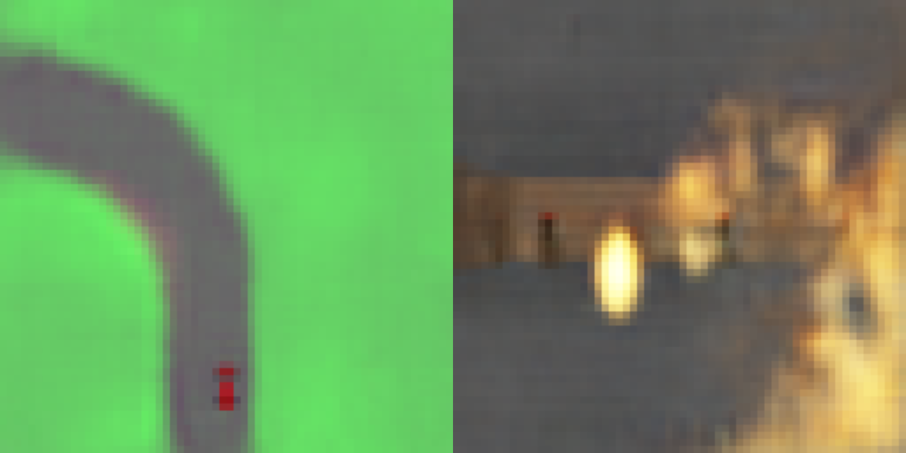
Figure 2. Frames generated inside the learned world model: CarRacing (left) and VizDoom: Take Cover (right). The controller is trained entirely on these VAE-decoded rollouts, then transferred back to the real environment without further adaptation. Source: Ha & Schmidhuber, 2018.
The modular setup left two visible gaps. Because perception and dynamics were trained in isolation, the dynamics model never saw which latent dimensions actually mattered for control; and the mixture-of-Gaussians head represented branching futures only crudely, with a fixed number of components per step. Closing both required training perception and dynamics together.
Joint training, but stochasticity tends to wash out memory. PlaNet [2] introduced the Recurrent State-Space Model (RSSM), in which every timestep carries two states: a deterministic GRU hidden state $h_t$ that preserves long-range memory, and a stochastic latent $s_t$ that represents uncertainty about the next observation. The split is the whole design choice. A purely deterministic RNN cannot express stochastic transitions and averages branching futures into a blurry mean; a purely stochastic state-space model resamples noise every step and quickly forgets the past. RSSM keeps both, fits them jointly with a single sequential ELBO, and decides by running CEM over action sequences entirely in latent space — no model-free actor. This was enough to match D4PG and SAC on continuous control with roughly 50× fewer environment episodes.
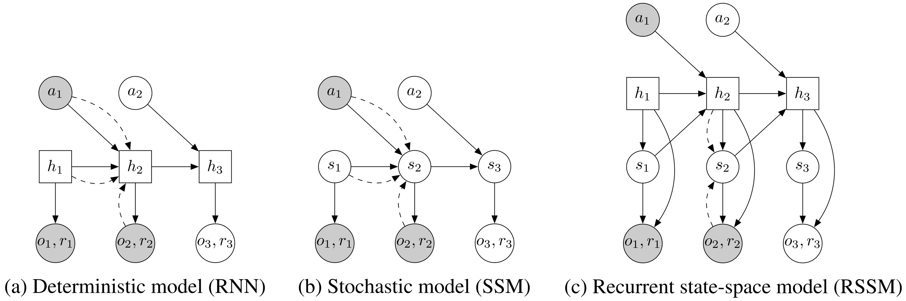
Figure 3. Three latent-dynamics designs compared. (a) A pure deterministic RNN cannot represent stochastic transitions; (b) a fully stochastic SSM can, but loses long-range information in the sampling noise; (c) RSSM splits the state into a deterministic $h_t$ (reliable memory) and a stochastic $s_t$ (uncertainty). Source: Hafner et al., 2019.
One configuration across many tasks. Two iterations later, DreamerV3 [3] kept RSSM and asked how to make the recipe tune-free. The Gaussian latent became a $32{\times}32$ grid of categoricals (the straight-through gradient trick familiar from VQ-VAE); CEM was replaced by an actor–critic trained on imagined latent trajectories, which is cheaper and amortizable across decisions; and three numerical adjustments were added so that the same hyperparameters work despite very different reward and observation scales:
A symlog transform $\operatorname{symlog}(x) = \operatorname{sign}(x)\log(1 + |x|)$ applied to pixels and rewards, so heavy-tailed targets become bounded.
A discrete two-hot critic that predicts return as a classification distribution over symlog-spaced bins, sidestepping the regression instability that long-tailed returns cause.
KL balancing with free bits — splitting the usual single prior/posterior KL into two stop-gradient terms (one updates the prior toward the posterior, the other does the reverse) and clipping each at 1 nat, which keeps the posterior informative without collapsing.
Figure 4. The DreamerV3 world model. An encoder maps each observation to a discrete stochastic latent $z_t$; a GRU carries the deterministic recurrent state $h_t$ conditioned on $(z_{t-1}, a_{t-1})$; a decoder reconstructs $\hat x_t$ from $(h_t, z_t)$. The paired actor–critic (not shown) is trained entirely on latent rollouts. Source: Hafner et al., 2025.
The empirical result is that one configuration matches or beats tuned domain-specific baselines across Atari, ProcGen, DMLab, Crafter, BSuite, and both proprioceptive and visual DMC, and is the first agent to mine a diamond from scratch in Minecraft.
Figure 5. One set of hyperparameters beats tuned domain-specific baselines across eight benchmarks — Atari, ProcGen, DMLab, Minecraft, Atari 100k, proprioceptive and visual DMC, and BSuite. Source: Hafner et al., 2025.
By the end of this line, latent-dynamics world models are reliable on games and proprioceptive control. The reconstruction is still done by a learned Gaussian or categorical decoder, however, and that decoder collapses branching futures into their mean. When the relevant content lives in a few pixels — the ball in Pong, an ammo counter, a thin sprite — the mean is unusable: the object disappears or smears, and a policy trained inside the model has nothing to react to. Diffusion is the natural next step because it does not collapse to a mean.
Ch. 2 Diffusion enters world modeling (2024)
Three lines of work in 2024 take the same swap seriously: replace the Gaussian or categorical decoder with a diffusion model. They differ in scale (DIAMOND on Atari vs GameNGen fine-tuning Stable Diffusion on DOOM), in where the action label comes from (recorded for DIAMOND and GameNGen, learned from unlabeled video for Genie), and in what they aim to demonstrate. The shared thread is what Chapter 1 ended on: when the relevant content lives in a few high-information pixels, you cannot afford a decoder that returns the conditional mean.
Replace the decoder, keep the recipe. DIAMOND [4] is the most direct read of "DreamerV3 with a diffusion decoder." A U-Net denoiser is trained in the EDM framework [12] on Atari trajectories: context frames $x_{\leq t}$ are channel-concatenated with the noisy target, actions $a_{\leq t}$ are injected through adaptive group normalization, and the noise level $\sigma(\tau)$ enters as a learned embedding. An actor–critic is then trained entirely on rollouts produced by the denoiser, the same way DreamerV3's actor–critic is trained on its categorical decoder's rollouts. The headline number is mean human-normalized score 1.46 on Atari 100k — at the time, SOTA among in-world-model agents — but the more useful demonstration is visual: in a VAE-decoded Pong rollout the ball vanishes between frames; in a DIAMOND rollout it survives. A policy trained on the first will never learn anything; one trained on the second can.
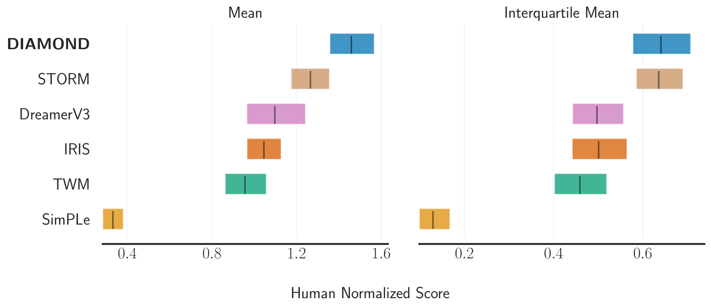
Figure 6. DIAMOND unrolls imagination along two time axes. The horizontal axis is environment time: a policy emits actions, and each new frame is produced by iteratively denoising along the vertical diffusion axis conditioned on past observations and the chosen action. The denoiser is a 2D U-Net with action conditioning injected via AdaGN in the residual blocks. Source: Alonso et al., 2024.
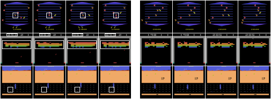
Figure 7. Consecutive frames imagined by IRIS (left) and DIAMOND (right) on Atari Boxing. The token-based VAE decoder in IRIS smears small, high-information objects — the ball, the punch animation, the player's posture — into blurry averages; the EDM-style diffusion decoder in DIAMOND preserves them. For a policy learned purely inside imagination, this is the difference between training signal and noise. Source: Alonso et al., 2024 (Figure 5).
One ablation in DIAMOND is worth flagging because it explains the operating point: $n=3$ denoising steps per environment step is what the paper uses. With $n=1$ the denoiser still hedges across modes (the opponent could go up or down) and the prediction is blurry; with $n=3$ it commits to a mode. More steps stop helping. This is the regime where diffusion is cheap enough for inside-model RL but sharp enough to be useful.
Scaling up: long horizons fight back. GameNGen [5] keeps the same recipe but pushes scale. A fine-tuned Stable Diffusion 1.4 plays DOOM at 20 FPS on a single TPU, and human raters pick the real engine over GameNGen at only ~58–60% accuracy on short clips. Three changes to SD 1.4 do the architectural work: text cross-attention is replaced by action-token cross-attention (one embedding per discrete DOOM action); the previous $N{=}64$ frame latents are channel-concatenated as context (≈3.2 s at 20 FPS); inference uses v-prediction with 4 DDIM steps. None of this is what makes the system actually run for more than a few seconds.
The blocker is autoregressive drift: the model's own outputs become its next-step inputs, and small errors compound. A naive version drifts off the manifold the engine ever produces and never recovers. The fix is noise-augmented context conditioning: each context frame's latent is corrupted at training time by Gaussian noise $\alpha_i \eta_i$ at a random level $\alpha_i \sim \mathcal{U}(0, 0.7)$, with the level fed in as an embedding. The model learns to denoise from arbitrarily corrupted contexts, and at inference its own slightly-wrong rollouts look like exactly that distribution. This is the pixel-space counterpart of PlaNet's latent overshooting [2] — the same compounding-error problem solved at a different layer of abstraction.
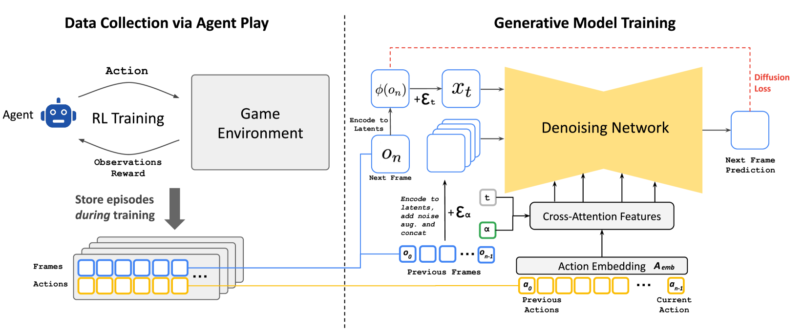
Figure 8. GameNGen method overview. Stable-Diffusion-v1.4 is fine-tuned to denoise the next frame conditioned on a stack of noise-augmented past frames (concatenated into the latent) and a sequence of past actions (cross-attended). Noise augmentation of the context is the crucial ingredient that keeps long autoregressive rollouts from drifting off-manifold. Source: Valevski et al., 2024 (Figure 3).
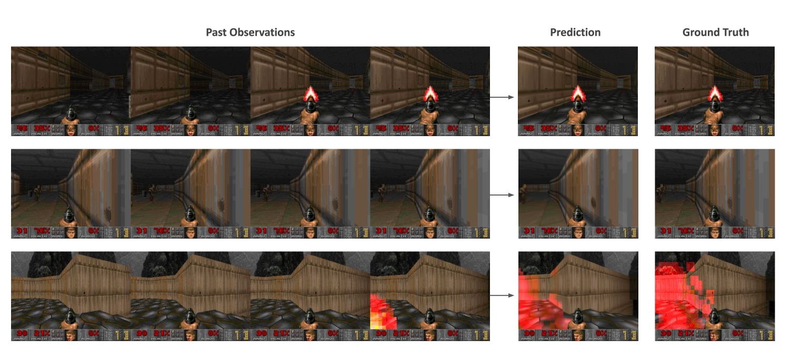
Figure 9. Model predictions versus ground-truth DOOM frames along a rollout. GameNGen holds up frame-for-frame against the real engine at short horizons; degradation appears as drift in distant geometry and HUD numerals rather than catastrophic loss of structure. Source: Valevski et al., 2024 (Figure 5).
Where do the actions come from? DIAMOND and GameNGen condition on action labels recorded by the environments they trained on. Genie [6] takes the question one step further: can the action vocabulary itself be learned from unlabeled video? Its Latent Action Model (LAM) is a small VQ-VAE with a deliberately tiny codebook ($|\mathcal{A}|{=}8$). The encoder sees both $x_{1:t}$ and $x_{t+1}$ and outputs a quantized latent $\tilde a_t$; the decoder must reconstruct $x_{t+1}$ from $x_{1:t}$ and $\tilde a_t$ alone. The bottleneck forces $\tilde a_t$ to carry the one thing that changed between frames, which on filtered gameplay video is what a human controller pressed. A separate MaskGIT dynamics model then predicts video tokens conditioned on stop-grad latent actions. Trained on ~30k hours of YouTube gameplay with no button labels, the eight learned actions become a joystick at inference: the user "plays" a generated 2D-platformer world from a single image prompt, and the same latent code produces the same effect (jump, move right, …) across visually distinct worlds.
Figure 10. The Latent Action Model. Given an unlabelled frame sequence $x_{1:t+1}$, an encoder produces a discrete latent $\tilde a_t$ that, together with $x_{1:t}$, lets a decoder reconstruct $x_{t+1}$. Because the bottleneck is small and quantized, $\tilde a_t$ is forced to carry exactly the information a human controller would supply — it becomes a de facto action label, learned without any action annotation. Source: Bruce et al., 2024 (Figure 4).Figure 11. Playable 2D-platformer worlds generated by Genie from single image prompts. Each row shows the same latent action applied to different prompt frames; the action's effect (jump, move right, etc.) transfers across visually distinct worlds, evidence that the latent action code is world-agnostic rather than world-specific. Source: Bruce et al., 2024.
past context predicted
x_{t-L} … x_{t-1} x_t ┌──> x_{t+1}
│ │ │ │
└──────┴───────┴──┐ │
v │
┌───────────────┐ │
action a_t──>│ F_θ (U-Net │─┘
│ or ST-trans) │
σ(τ) ─>│ denoiser │
└───────────────┘
^
feedback from prior step's sample — compounding error
────── mitigated by noise-augmented context ───────
Figure 12. The canonical diffusion world-model circuit shared by all three papers. Context frames are channel-concatenated with the noisy target; the action enters via AdaGN (DIAMOND), cross-attention (GameNGen), or a learned latent token (Genie). The feedback loop is where compounding error lives, and noise-augmented context is each paper's first line of defense.
What diffusion buys, and what it doesn't. Across these three papers, what diffusion contributes is consistent. It preserves multimodal pixel detail that a Gaussian decoder collapses to a blurry mean (the Pong ball; the DOOM HUD digits); it produces sharp samples without GAN-style adversarial instability; and it absorbs heterogeneous conditioning — discrete actions through cross-attention or AdaGN, continuous context through channel concatenation, noise level as an embedding — without architectural changes. None of the three required a custom denoising backbone; the same U-Net or transformer core worked across Atari, DOOM, and YouTube gameplay.
What it does not buy is the ability to model the environments that software agents act in. Three concrete failure modes:
Text rendering. Diffusion models are notoriously poor at sharp glyphs. A misrendered menu label on a GUI is a semantic error, not a cosmetic one — "Save" rendered as "Sove" leads the agent to a different action. GameNGen had to specifically fine-tune its autoencoder to keep the DOOM ammo counter legible, and that is for fixed-position digits in a single font.
Exact symbolic state. Web pages and apps have a ground-truth DOM; "close enough" pixels are wrong. Pixel diffusion has no representation of the underlying tree.
Compositional action spaces. DOOM has ~56 keys with fixed semantics; a browser has an unbounded action vocabulary in which every visible element multiplied by every gesture is its own action, and the meaning of "click here" depends on the DOM the model itself produced.
These are why the first wave of world models for browsers, mobile apps, and operating systems skipped pixels entirely.
Ch. 3 LLMs as world models for the web (2024–2025)
Browsers, mobile apps, and operating systems are predominantly text-shaped. The DOM is text. The accessibility tree is text. Element IDs, URLs, button labels, error messages, and page titles are all text. Large language models are also text-shaped, and have been pretrained on enough of the public web to have absorbed something about how pages respond to clicks. The most direct way to build a world model in this space is to ask one: hand an LLM the current page and an action, and have it produce a description of the next page.
The first wave of work in 2024–2025 — WMA [7], WebDreamer [8], R-WoM [9] — took this premise seriously, and the order in which the three papers appeared lines up with the obstacles each one ran into.
Obstacle 1: the next page is too long to predict. A typical web page is thousands of DOM nodes, but the difference between two consecutive pages is usually small — a banner appears, a row is removed, a price changes. Asking an LLM to regenerate the entire next page makes most of the supervision signal noise. WMA [7] takes the obvious shortcut: predict only what changed. The training pipeline aligns DOM elements between $o_t$ and $o_{t+1}$ via Hungarian matching, tags each element as ADDED / UPDATED / DELETED, and asks GPT-4o-mini to compress the result into a single natural-language diff — for example, "a red banner was added saying 'Out of stock'; the Buy button was removed." A Llama-3.1-8B-Instruct model is then fine-tuned on ~14.2K such (state, action, diff) triples synthesized from WebArena and Mind2Web. At inference, the agent samples $k$ candidate actions, rolls each through the fine-tuned world model once, scores the resulting diffs with a value function, and takes the argmax.
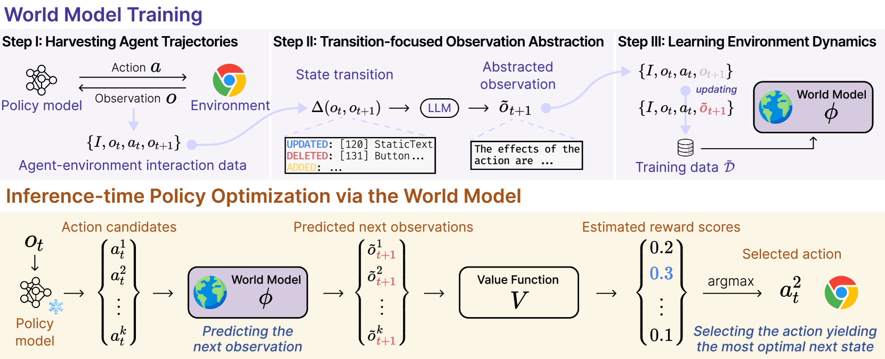
Figure 13. WMA framework overview. Top: the world model is trained on trajectories from a web environment, with observations abstracted into transition-focused natural-language diffs. Bottom: at inference the frozen policy proposes candidate actions, the world model imagines each resulting state, and a value function scores them — the best-scoring action is executed. Source: Chae et al., 2025 (Figure 3).
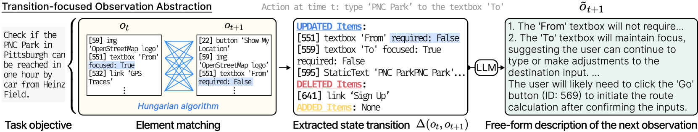
Figure 14. Transition-focused abstraction on a concrete web page. DOM nodes between consecutive observations are aligned via Hungarian matching, tagged ADDED / UPDATED / DELETED, then compressed into a short natural-language diff. This sidesteps HTML length blowup and gives the world model a sharper supervision signal than full-page regeneration. Source: Chae et al., 2025 (Figure 5).
The numbers are encouraging. WebArena success rate goes from 13.1% (GPT-4o reactive) to 16.6% with WMA, and from 9.4% to 13.5% with GPT-4o-mini — closing roughly half the gap to tree-search agents (19.2%) at a fraction of the cost. The win is real; it is also constrained. WMA needs the abstraction pipeline (DOM matching, GPT-4o-mini rewriting), it needs the fine-tuning corpus, and the value of the prediction is bounded by what a diff can express.
A different angle on the same problem: maybe no specialized training is needed. WebDreamer [8] reads the situation differently. If a frontier LLM has already absorbed enough of the web's mechanics from its pretraining corpus, then prompting it to describe the next state in natural language might be enough — no fine-tuning, no abstraction pipeline, no DOM matching. Their planning loop is one-step MPC: enumerate top-$k$ candidate actions, prune by self-refinement, ask the world model "what would the page look like after each one," score the imagined outcomes on a 3-level scale (complete = 1.0 / on-track = 0.5 / incorrect = 0.0), take the argmax. The same off-the-shelf GPT-4o serves as policy, world model, and scorer.
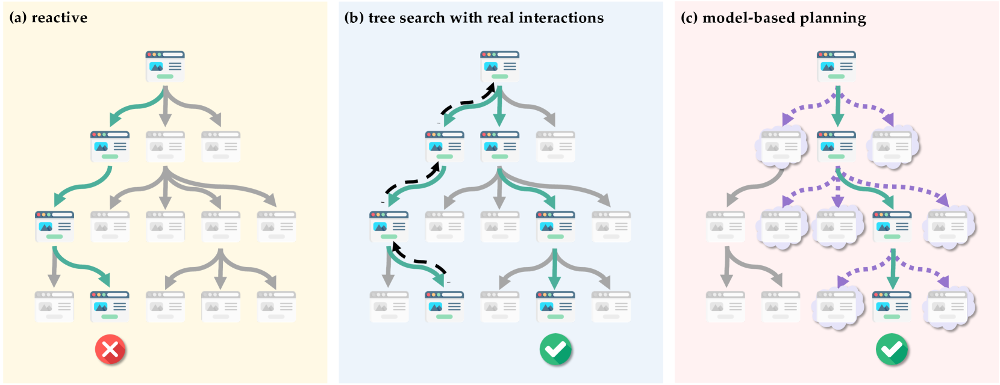
Figure 15. Three search strategies for web agents. Reactive agents commit to one action per page with no lookahead; tree search explores the real environment (risking irreversible clicks on production websites); WebDreamer's model-based planning explores an imagined tree entirely in the LLM's head, getting lookahead benefits without side effects. Source: Gu et al., 2025 (Figure 1).
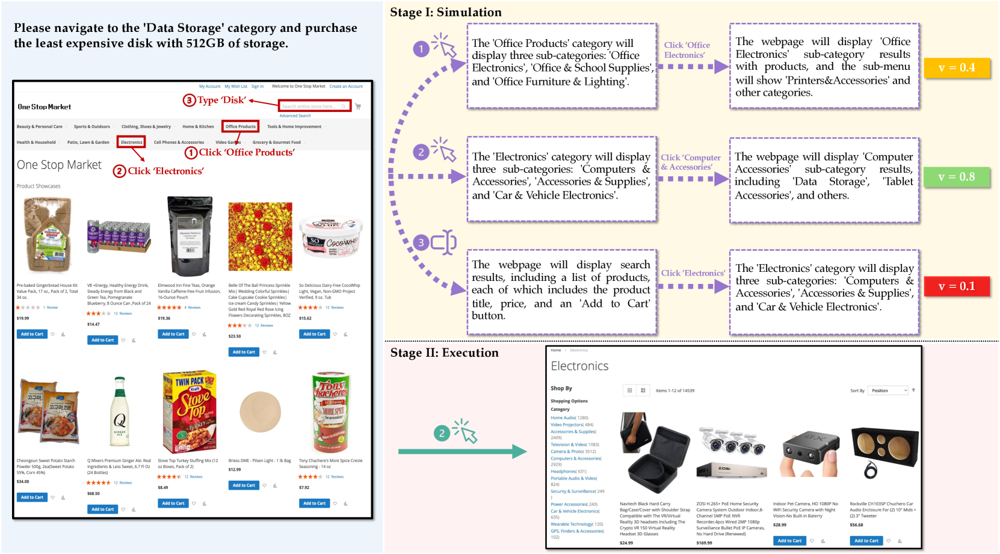
Figure 16. WebDreamer's MPC-style loop. The LLM enumerates candidate actions from the current page, simulates each one forward in natural language for a few steps, scores the imagined trajectories, then takes the argmax — using the LLM as both policy and world model without any external simulator. Source: Gu et al., 2025 (Figure 2).
The relative gains over reactive baselines are substantial: +34.1% on VisualWebArena, +23.8% on Mind2Web-Live (104 tasks across 69 live sites), +42.3% on Online-Mind2Web, all at roughly 4–5× less compute than real-environment tree search at comparable success. The paper also includes a Dreamer-7B variant fine-tuned on top of Qwen2-VL-7B with a synthesized 3.1M-instance corpus — useful when efficiency or specialization matters, and it does outperform GPT-4o-as-world-model with only 25K in-domain instances on VisualWebArena. But the more striking finding is the zero-shot one. Pretraining had carried more of the world-model signal than the supervised approach assumed, and at this point the natural conclusion would be: just use a strong enough LLM.
The catch: local accuracy doesn't mean global reliability. Both WMA and WebDreamer report single-step planning gains. R-WoM [9] is the paper that measures what happens at longer horizons, and the answer is uncomfortable. LLM world models hit ~86% on single-step next-state prediction; full-procedure alignment over multi-step trajectories falls to 50–65%. The drop is not random degradation — it is hallucinated UI elements that compound. The model invents a button that does not exist, the next imagined step proceeds as if it did, and the trajectory diverges from anything the real environment would produce.
The proposed fix is grounding rather than scale: retrieve real procedural knowledge before each rollout. R-WoM's setup is a ~30K-chunk corpus of software tutorials (WikiHow plus vendor documentation for Chrome, GIMP, VS Code, Ubuntu, Thunderbird, VLC, LibreOffice, GitLab, and Adobe Commerce), a Qwen-3-Embedding-8B dense retriever over FAISS with query rewriting and an LLM reranker, and the retrieved evidence injected into both the LongCoT state-prediction rollout and a listwise reward ranker over candidate trajectories.
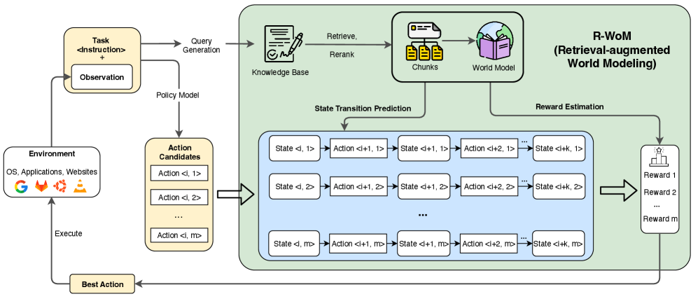
Figure 17. R-WoM grounds the LLM world model with retrieved tutorials. For each candidate action, relevant docs are retrieved from a tutorial corpus and injected into the world model's context before it rolls out $k$ steps and scores the trajectory. The retrieval corrects for parametric knowledge drift that otherwise compounds over long horizons. Source: Mei et al., 2025 (Figure 2).
The grounding pays off across two strong backbones — absolute task success rates, with R-WoM's relative gain in parentheses:
Backbone
Method
OSWorld
WebArena
Qwen-2.5-VL-72B
Vanilla
26.4%
21.8%
R-WoM
37.5% (+42.0% rel.)
28.5% (+30.7% rel.)
Claude-3.7-Sonnet
Vanilla
28.5%
28.9%
R-WoM
38.5% (+35.1% rel.)
34.6% (+19.7% rel.)
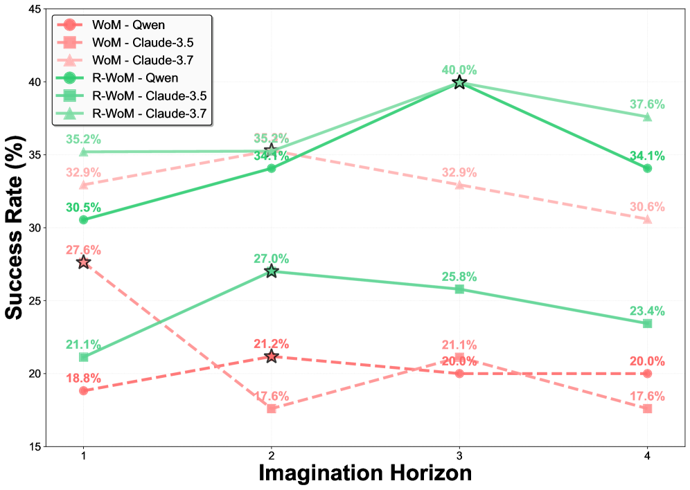
Figure 18. Horizon analysis on OSWorld. The ungrounded world model (WoM) edges up at horizon 2 then collapses as compounding prediction errors outweigh lookahead value. R-WoM keeps climbing through horizon 3 before tapering — tutorial grounding stabilizes rollouts over the longer imagination windows that planning actually needs. Source: Mei et al., 2025 (Figure 4a).
The horizon plot is the load-bearing one. WebDreamer's ungrounded rollouts plateau after about two imagined steps; past that, the hallucination rate grows faster than the lookahead value. R-WoM keeps improving through horizon three before tapering. Read together with WebDreamer's zero-shot result, the picture sharpens: pretrained LLMs really do contain a lot of structural knowledge about web interaction, but the parametric copy is not faithful enough to support multi-step planning on its own. Retrieved evidence is what makes long-horizon imagination viable, and "long-horizon" here means three.
What this approach still doesn't see. Even a perfectly-grounded LLM world model is consuming an accessibility tree, not a screen. That choice carries real costs:
Lost layout. A11y trees flatten visual hierarchy. A "Confirm" button immediately adjacent to a destructive "Delete" looks textually identical to one across the page, so spatial reasoning tasks become invisible to the model.
Icons and canvas content. Design tools (Figma, Photoshop, Blender), games, video editors, and any canvas-based application have minimal meaningful DOM. A text world model has nothing to predict.
Mismatch with deployed agents. Production computer-use agents — Claude Computer Use, OpenAI's operator, every screenshot-based GUI agent — consume pixels. A text-only world model cannot simulate what those agents see, and therefore cannot plan for them.
The next chapter is about the first attempts to close that last gap.
Ch. 4 Visual world models for GUIs (2025–2026)
Two papers, ViMo [10] and MobileDreamer [11], published within nine months of each other, are the first serious attempts at a world model that consumes a screen rather than a DOM. They agree on the goal — close the visual gap that the text-based work in Chapter 3 left open — and disagree on something fundamental: should a GUI world model generate the pixels of the next screen, or is a structured abstraction enough?
The disagreement is not stylistic. It traces directly to which of Chapter 2's failure modes you treat as load-bearing. If the unacceptable cost is being unable to plan for a screenshot-consuming agent, you keep the pixels and fight the text-rendering problem. If the unacceptable cost is generating pixels you don't need, you throw them away.
Keep the pixels; route around text. ViMo [10] reads the situation as follows: a deployed computer-use agent (Claude Computer Use, OpenAI's operator) consumes screenshots, so to plan for it the world model must also produce screenshots. The blocker, identified clearly in Chapter 2, is that diffusion models cannot render legible text — and a GUI is mostly text. The fix is not to make diffusion better at glyphs but to remove glyphs from the diffusion target altogether.
The mechanism is Symbolic Text Representation (STR). Before training, every text region in every screenshot is replaced by a colored rectangular placeholder. The diffusion model — Stable Diffusion fine-tuned InstructPix2Pix-style, with the current STR-ified screenshot as image condition channel-concatenated with the noisy latent and a natural-language action ("click the plus icon") routed through the SD text encoder — learns to predict these STR images, never raw screenshots. At inference, an LLM reads the predicted STR image plus context and writes the appropriate string into each placeholder; the strings are then composited back onto the STR canvas to recover a legible screenshot. Diffusion does layout, widget shape, and icon appearance; the LLM does glyphs.
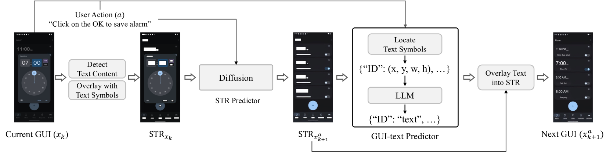
Figure 19. The ViMo pipeline. Given the current GUI $x_k$, an OCR pass detects every text region and overlays it with a black-bordered white rectangle, producing the Symbolic Text Representation $\mathrm{STR}_{x_k}$. A fine-tuned Stable Diffusion STR Predictor takes $\mathrm{STR}_{x_k}$ plus the action $a$ and predicts the next STR; a GUI-text Predictor (LLM) then fills a string into each placeholder, which is composited back onto the STR canvas. The diffusion model never has to render legible glyphs. Source: Luo et al., 2025 (Figure 2).
Training data is ~19 apps / 3,550 episodes / 23.6K screenshots pooled from Android Control and Android in the Wild. Evaluation reports three automatic metrics — GUI Consistency (DINO feature similarity), Instructional Accuracy (does the prediction reflect the action), Action Readiness (is the next action still groundable) — plus a 70-participant user study. Downstream, agents augmented with ViMo rollouts gain ~14% step accuracy.
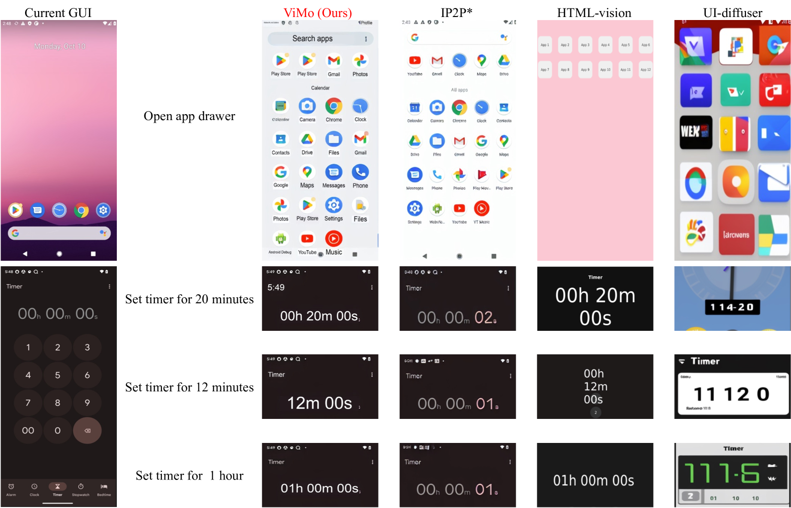
Figure 20. Qualitative comparison on two action types: "Open app drawer" (top) and three timer-setting commands (bottom). ViMo produces legible timer strings (00h 20m 00s, 12m 00s, 01h 00m 00s) while IP2P fine-tuned to paint every pixel collapses the digits into garbled glyphs, HTML-vision mangles the layout, and UI-Diffuser loses the app identity entirely. Decoupling text rendering from pixel synthesis is what lets ViMo stay readable where pure diffusion fails. Source: Luo et al., 2025 (Figure 3).
Figure 20 carries the qualitative argument. A vanilla IP2P fine-tune asked to paint every pixel collapses timer digits into garbled glyphs; HTML-vision baselines mangle the layout; UI-Diffuser loses the app identity. ViMo stays readable because it never asked diffusion to do glyphs in the first place. What ViMo does not solve is cost: each rollout is a full diffusion call followed by an LLM compositor, and the ~14% step-accuracy gain is bought at a per-step compute that puts deep tree search through the world model out of reach.
Throw away the pixels. MobileDreamer [11] takes the opposite reading. Most pixels in a GUI are not planning-relevant — backgrounds, gradients, decorative imagery, exact font rendering. What an agent actually needs to act on is which clickable element is where, and what does it say. So drop pixels entirely and predict, for each screen, a set of tuples $\{(\text{label}, \text{text}, \text{bbox})\}$ — for example, {label: "text", text: "Totals", bbox: [50, 343, 285, 467]}. Textures, icons, gradients are gone. What remains is exactly the planning-relevant semantics.
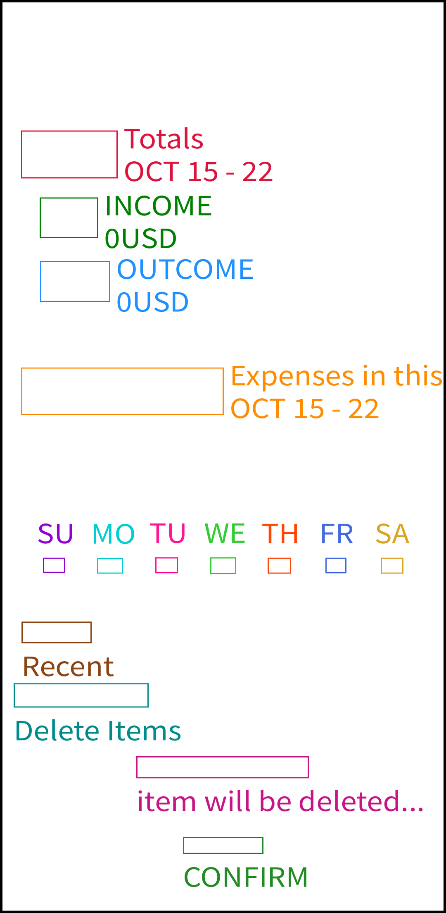
Figure 21. Real GUI screenshot (left) versus its predicted textual sketch rendered for visualization (right). Every element is reduced to a (label, text, bbox) tuple — e.g. label=text; text="Totals"; bbox=[50, 343, 285, 467]. Textures, icons, and decorative content are discarded; the world model only has to predict what is planning-relevant. Source: Cao et al., 2026 (Figure 3).
Choosing this representation reshapes the modeling problem in two ways. First, the next screen is no longer a sequence — it is an unordered set of elements, and reshuffling tuple order should not be penalized. MobileDreamer fine-tunes Qwen3-8B with LoRA against a composite loss that uses optimal-transport matching between predicted and ground-truth element sets, with bbox IoU, label classification, and text-embedding similarity as the per-match cost. Second, because predicting a sketch is cheap and structured, planning can run multi-step rollouts in a tree of prediction: propose multiple candidate actions per screen, expand each into a predicted next-sketch, recurse to configurable depth, feed the imagined trajectories back to the agent as textual context for action selection. This is the multi-step lookahead that ViMo's per-step compute precludes.
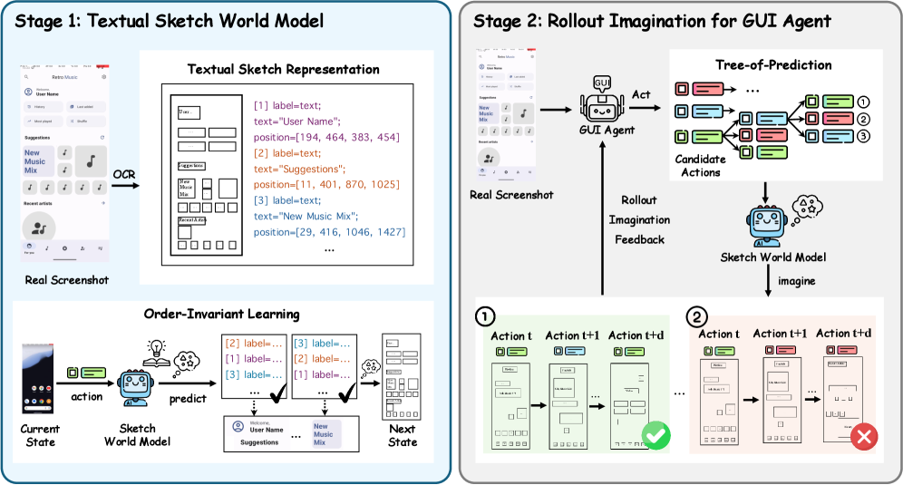
Figure 22. The two-stage MobileDreamer framework. Stage 1 trains a Textual Sketch World Model with an order-invariant, IoU-aware objective so element matches are robust to permutation and small position shifts. Stage 2 uses the trained TSWM as a callable function: the agent proposes candidate actions, the world model imagines their resulting sketches, and this recursion builds a tree of prediction. The agent then picks an action by looking several steps ahead rather than greedily. Source: Cao et al., 2026 (Figure 2).
Training data is 110.1K (sketch, action, next-sketch) triples — 61.7K from Android Control plus 50.5K manually annotated, with 2.1K held out. On Android World, MobileDreamer lifts task success rate by +5.25% over reactive baselines, and the gain is consistent across five different LLM agent backbones (Qwen, GPT-4.1, GPT-4o, Gemini, Claude). The cross-backbone consistency is the more useful indicator: the world model is contributing signal independent of which agent calls it.
The disagreement, and why it sounds familiar. ViMo and MobileDreamer represent opposite ends of a representation axis, and each pays the natural price for its choice. ViMo preserves every visual affordance — unexpected modals, ads, novel icons, rendering quirks — but its text handling is a workaround rather than a fix; the diffusion model still cannot render glyphs, it has only learned to leave a hole where glyphs go. MobileDreamer is cheap, plannable over multi-step rollouts, and faithful to planning-relevant semantics — but it is bounded by its schema. Anything off-schema (a captcha, a toast notification, an image-only button, a decorative animation that affords interaction) is invisible to the model.
This split is the same one Chapters 1 and 2 went through. Latent-dynamics models [1][2][3] predicted in a learned latent and decoded pixels through a Gaussian or categorical decoder that smoothed away small details; diffusion world models [4][5] predicted pixels directly and preserved them. The 2024 wave argued that pixel sharpness mattered for control; that argument is now being repeated in a new domain, and the resolution will most likely also be the same — not one or the other, but a hybrid.
Axis
ViMo
MobileDreamer
State representation
Pixel screenshot (STR-ified during diffusion)
Set of {label, text, bbox} tuples
Generative backbone
Stable Diffusion (IP2P-style)
Qwen3-8B (LoRA)
Action conditioning
Natural-language instruction
Structured action → next set
Text handling
Bypassed: rectangles → LLM composites
First-class: tuple field
Training data
Android Control + AITW, 23.6K screenshots
Android Control + manual, 110.1K triples
Planning
Single-step rollout → agent scorer
Tree of prediction (multi-step)
Evaluation
DINO similarity, instructional accuracy, user study
Android World task success (+5.25%)
Outlook: an inflection point
Across the four chapters, the progression is short and the dates compress quickly toward the present:
The notable thing about this diagram is that every architectural ingredient a Dreamer-class GUI world model would need is already present somewhere in it:
A diffusion canvas branch for widget geometry, layout, and imagery — DIAMOND [4], GameNGen [5], ViMo [10].
A structured text branch for glyphs and DOM labels — MobileDreamer [11], WMA [7].
Latent actions learned from unlabeled video, which would let a model learn a GUI's action vocabulary from screen recordings without click annotations — Genie [6].
Retrieval grounding to stabilize long-horizon rollouts — R-WoM [9].
An RSSM-style recurrent latent to carry long context cheaply — PlaNet [2], DreamerV3 [3].
Flow matching[13] or consistency models for 1–4 step sampling, which is what would make rollout trees in pixel space affordable.
No single system has put these together. That is the inflection point this post has been building toward: 2026 for GUI world models looks structurally like 2019 for physical ones — the parts are here, the integration is not.
Open problems
The text-rendering bottleneck. STR bypasses diffusion's glyph problem rather than solving it. A proper fix — perhaps a dual-branch decoder that composites a pixel canvas with a structured text layer trained jointly — does not exist for GUIs.
Long-horizon error accumulation. GameNGen's noise-augmented context and Genie's MaskGIT re-projection are per-frame local fixes. A principled treatment — perhaps an RSSM-style latent that constrains rollouts geometrically — has not been done for GUI world models.
Action grounding. A click is a continuous $(x, y)$ coordinate whose semantics are defined by the rendered pixels the model itself produces — a self-referential grounding problem neither ViMo nor MobileDreamer fully resolves.
Evaluation. What counts as a "plausible" predicted screenshot? ViMo triangulates three indirect automatic metrics plus a 70-participant user study; that is the state of the art and still unsatisfying.
Affordable pixel sampling. Single-step or 2–4 step samplers (flow matching, consistency models) would put a ViMo-style predictor close to real-time and make deeper trees of prediction viable. The likely next axis of progress on the canvas branch.
A world-model-centric benchmark. WebArena, VisualWebArena, OSWorld, and Android World measure agents, not world models. A benchmark that scores $N$-step predictions against ground-truth observations and downstream task success jointly would accelerate the field.
A concrete prediction
The system that first wins on OSWorld or Android World by a convincing margin will, I expect, look something like this:
A dual-branch generator: a flow-matching canvas branch operating in a deliberately text-free latent (widgets, imagery, layout), plus a transformer branch predicting element-level sketches (labels, strings, bboxes), composited by a joint decoder so layout and glyphs stay consistent.
A latent action model trained on unlabeled screen recordings, in Genie's style, decoupling raw $(x, y)$ coordinates from the model's internal "what changed" token.
Retrieval-grounded memory over past trajectories for the same app — R-WoM's insight extended beyond static tutorials to live agent experience.
Actor–critic in imagination, in DreamerV3's style, over sketch-level rollouts, with the pixel branch consulted only for disambiguation.
Such an agent does not plan by enumerating actions in the real environment. It plans by imagining the next screen — in pixels and in structure — and choosing among those imaginations. That is what dreaming in pixels is for.
References
Ha, D. & Schmidhuber, J. "World Models." NeurIPS, 2018. arXiv:1803.10122
Hafner, D. et al. "Learning Latent Dynamics for Planning from Pixels" (PlaNet). ICML, 2019. arXiv:1811.04551
Hafner, D. et al. "Mastering Diverse Domains through World Models" (DreamerV3). Nature, 2025. arXiv:2301.04104
Alonso, E. et al. "Diffusion for World Modeling: Visual Details Matter in Atari" (DIAMOND). NeurIPS, 2024. arXiv:2405.12399
Valevski, D. et al. "Diffusion Models Are Real-Time Game Engines" (GameNGen). 2024. arXiv:2408.14837
Bruce, J. et al. "Genie: Generative Interactive Environments." ICML, 2024. arXiv:2402.15391
Chae, H. et al. "Web Agents with World Models: Learning and Leveraging Environment Dynamics in Web Navigation" (WMA). ICLR, 2025. arXiv:2410.13232
Gu, Y. et al. "Is Your LLM Secretly a World Model of the Internet? Model-Based Planning for Web Agents" (WebDreamer). TMLR, 2025. arXiv:2411.06559
Mei, K. et al. "R-WoM: Retrieval-augmented World Model for Computer-use Agents." 2025. arXiv:2510.11892
Luo, D. et al. "ViMo: A Generative Visual GUI World Model for App Agents." 2025. arXiv:2504.13936
Cao, Y. et al. "MobileDreamer: Generative Sketch World Model for GUI Agent." 2026. arXiv:2601.04035
Karras, T. et al. "Elucidating the Design Space of Diffusion-Based Generative Models" (EDM). NeurIPS, 2022.
Lipman, Y. et al. "Flow Matching for Generative Modeling." ICLR, 2023.
Accuracy caveats
Some numerical details are at the level of "matches the paper's published version but cross-check before citing in a formal venue": DreamerV3 KL-balancing coefficients ($\beta_{\text{dyn}}{=}0.5$, $\beta_{\text{rep}}{=}0.1$, imagination horizon $H{\approx}15$); DIAMOND's exact context length ($L{=}4$ per appendix); MobileDreamer's tree-of-prediction selection rule (expand-only vs. full UCB is unclear from the available description).
Dreaming in Pixels
Generative World Models for Digital Agents
Bowen Wang · DATA8018 Deep Generative Models · Spring 2026
What is a world model?
A learned distribution over the next observation, given the current observation and an action:
$$ p_\theta(s_{t+1} \mid s_t, a_t) $$
With a sufficiently accurate $p_\theta$, an agent can plan, search, and improve a policy inside the model, not in the real environment.
Substitute one expensive sample from the world with many cheap samples from a network.
The gap this post is about
Where world models work today: games, continuous control. Dreamer, DIAMOND, GameNGen, etc. use far fewer environment samples than model-free baselines.
Where they have barely arrived: browsers, mobile apps, operating systems — the environments contemporary software agents (web agents, computer-use agents, GUI agents) actually act in.
Why digital is hard for generative modeling:
Transitions follow software logic, not physics.
State has exact symbolic content (URLs, prices, error strings).
Action space is unbounded and tied to the current screen.
Many actions are irreversible in ways pixels can't disambiguate.
Four chapters
Latent-dynamics world models — 2018–2023 (Ha & Schmidhuber, PlaNet, DreamerV3)
Diffusion enters world modeling — 2024 (DIAMOND, GameNGen, Genie)
LLMs as world models for the web — 2024–2025 (WMA, WebDreamer, R-WoM)
Visual world models for GUIs — 2025–2026 (ViMo, MobileDreamer)
Each chapter builds on the failure modes the previous one left open.
Chapter 1
Latent-dynamics world models
One sentence: encode each observation into a low-dimensional latent $z_t$, learn a recurrent transition $p(z_{t+1} \mid z_t, a_t)$, and let the agent plan inside that latent simulator.
Three things had to be worked out before this became a reliable recipe.
Controller trained entirely on rollouts produced inside the learned model, then transferred back to VizDoom Take Cover.
The lesson: an agent can be competent without ever being trained on real frames, once the model exists. The bottleneck is representation and dynamics, not policy.
Q2: Can we train V and M jointly without losing memory?
PlaNet (2019) — RSSM
Every timestep carries two states:
Deterministic GRU $h_t$ — long-range memory
Stochastic latent $s_t$ — uncertainty
Pure RNN: can't represent stochastic transitions. Pure SSM: forgets quickly because every step resamples. RSSM: keeps both, fit jointly with a single sequential ELBO.
CEM in latent space → matches D4PG/SAC with ~50× fewer environment episodes.
Q3: One config across many tasks?
DreamerV3 (2025)
Discrete latent: $32\times32$ categoricals (straight-through gradient, like VQ-VAE).
Symlog: $\operatorname{symlog}(x) = \operatorname{sign}(x)\log(1+|x|)$ on rewards/pixels — bounded targets without per-task scaling.
Two-hot critic: classification over symlog bins, not regression.
KL balancing + free bits: split prior/posterior KL into two stop-gradient terms, clip at 1 nat — fights posterior collapse.
Actor–critic in imagination replaces per-step CEM.
Result:one hyperparameter set beats domain-specific baselines on Atari, ProcGen, DMLab, Crafter, BSuite, DMC; first agent to mine a diamond from scratch in Minecraft.
Chapter 1 takeaway
Reliable, but the decoder still averages
Latent-dynamics models are mature on games and proprioceptive control.
The reconstruction is still a learned Gaussian or categorical decoder. It collapses branching futures into the conditional mean.
When the relevant content lives in a few pixels — the ball in Pong, an ammo counter, a thin sprite — the mean is unusable: the object disappears.
Diffusion is the natural next step because it does not collapse to a mean.
Chapter 2
Diffusion enters world modeling (2024)
Three lines of work in 2024 take the same swap seriously: replace the Gaussian/categorical decoder with a diffusion model.
They differ in scale, in where action labels come from, and in what they aim to demonstrate.
DIAMOND · GameNGen · Genie
DIAMOND
Replace the decoder, keep the recipe
"DreamerV3 with a diffusion decoder." EDM-framework U-Net denoiser on Atari trajectories. Context concatenated channel-wise; actions via AdaGN; noise level $\sigma(\tau)$ embedded.
Actor–critic trained entirely on rollouts from the denoiser.
Atari 100k: mean human-normalized 1.46 (SOTA in-world-model at the time).
Operating point: $n=3$ denoising steps per environment step. $n=1$ → blurry hedge. More steps stop helping.
IRIS (left) smears the ball; DIAMOND (right) keeps it.
GameNGen
Scaling up: long horizons fight back
Fine-tuned Stable Diffusion 1.4 plays DOOM at 20 FPS on a single TPU. Human raters pick the real engine over GameNGen at only ~58–60% accuracy on short clips.
Architectural changes: action-token cross-attention; $N{=}64$ frame latents as context; v-prediction with 4 DDIM steps.
Real blocker: autoregressive drift — the model's outputs become its next-step inputs, errors compound, naive version drifts off-manifold within seconds.
Fix — noise-augmented context conditioning: corrupt each training-time context frame by Gaussian noise at level $\alpha_i \sim \mathcal{U}(0, 0.7)$. At inference the model's own slightly-wrong rollouts look like exactly that distribution.
= the pixel-space counterpart of PlaNet's latent overshooting.
Genie
Where do the actions come from?
30k hours of unfiltered YouTube gameplay. No button labels.
Latent Action Model (LAM): a small VQ-VAE with codebook size $|\mathcal{A}|=8$. Encoder sees $x_{1:t}$ and $x_{t+1}$, outputs $\tilde a_t$. Decoder must reconstruct $x_{t+1}$ from $x_{1:t}$ and $\tilde a_t$ alone.
The bottleneck forces $\tilde a_t$ to encode the one thing that changed — which on gameplay video is what a human controller pressed.
At inference, the 8 latent codes become a joystick. Same code → same effect across visually distinct generated worlds.
Chapter 2 takeaway
What diffusion buys, and what it doesn't
Buys:
Multimodal pixel detail that a Gaussian decoder collapses.
Browsers, apps, operating systems are predominantly text-shaped (DOM, a11y tree, IDs, labels, error strings). LLMs are also text-shaped and have been pretrained on a lot of the web.
Most direct attempt: hand an LLM the current page and an action, have it produce the next page in natural language.
Three papers, three obstacles — in the order they appeared.
Obstacle 1: the next page is too long
WMA — predict only the diff
Asking an LLM to regenerate a full next page makes most of the supervision signal noise. WMA predicts only what changed.
Pipeline: Hungarian matching aligns DOM elements between $o_t$ and $o_{t+1}$ → ADDED / UPDATED / DELETED → GPT-4o-mini compresses into a single NL diff:
"a red banner was added saying 'Out of stock'; the Buy button was removed."
Llama-3.1-8B fine-tuned on ~14.2K (state, action, diff) triples. At inference: sample $k$ candidate actions, roll each through the world model, score, argmax.
WebArena: GPT-4o 13.1% → +WMA 16.6%. Closes ~½ the gap to tree search at a fraction of the cost.
A different angle on the same problem
WebDreamer — maybe no specialized training is needed
If a frontier LLM has absorbed enough of the web's mechanics from pretraining, just prompt it as a world model.
One-step MPC: enumerate top-$k$ actions → self-refine prune → ask the LLM "what would the page look like" → score on a 3-level scale (complete / on-track / incorrect) → argmax.
Same off-the-shelf GPT-4o serves as policy, world model, and scorer.
Relative improvement over reactive baseline:
VisualWebArena: +34.1%
Mind2Web-Live: +23.8%
Online-Mind2Web: +42.3%
~4–5× less compute than real-environment tree search
Natural conclusion: just use a strong enough LLM.
The catch: local accuracy ≠ global reliability
R-WoM — retrieval saves long-horizon rollouts
LLM world models hit ~86% on single-step prediction; full-procedure alignment falls to 50–65% over multi-step trajectories.
Failure mode: hallucinated UI elements compound. Model invents a button, next step rolls forward as if it existed, trajectory diverges.
Fix is grounding, not scale. Retrieve real procedural knowledge before each rollout: ~30K-chunk tutorial corpus (WikiHow + vendor docs), Qwen-3-Embedding-8B over FAISS.
Evidence injected into both the LongCoT state-prediction rollout and the listwise reward ranker.
Ungrounded plateaus at horizon 2; R-WoM keeps climbing through 3.
Chapter 3 takeaway
Even a perfect text world model misses the screen
Reading an a11y tree is not seeing a screen. The cost:
Lost layout — "Confirm" next to "Delete" looks textually identical to one across the page.
Icons and canvas content — Figma, Photoshop, games, video editors have no meaningful DOM.
Mismatch with deployed agents — Claude Computer Use, OpenAI's operator, every screenshot-based GUI agent consumes pixels.
To plan for those agents, the world model has to consume what they consume.
Chapter 4
Visual world models for GUIs (2025–2026)
Two papers, published within nine months of each other, are the first attempts at a world model that consumes a screen, not a DOM.
They disagree on something fundamental: generate the pixels of the next screen, or skip them and predict structure?
Each answer is a choice about which Chapter 2 failure mode is load-bearing.
ViMo — keep the pixels, route around text
Symbolic Text Representation (STR)
Replace every text region with a colored rectangular placeholder before training. Diffusion model (SD fine-tuned IP2P-style) predicts STR images, never raw screenshots.
An LLM compositor reads the predicted STR plus context and fills each placeholder with the right string.
Diffusion does layout / widget shape / icon. LLM does glyphs.
Result: +14% step accuracy for downstream agents. But each rollout = full diffusion call + LLM compositor — deep tree search is out of reach.
Vanilla diffusion garbles timer digits. ViMo keeps them legible because diffusion never tried to render them.
MobileDreamer — throw away the pixels
Predict structured sketches, plan over them
Most pixels in a GUI aren't planning-relevant. What an agent acts on: which clickable element is where, what does it say.
State = set of tuples {label, text, bbox}. Textures, icons, gradients gone.
Order-invariant set prediction: Qwen3-8B + LoRA, optimal-transport matching with bbox IoU + label classification + text-embedding similarity as per-match cost.
Tree of prediction: sketches are cheap → multi-step rollouts become viable. Branch over candidate actions, expand to depth, feed imagined trajectories back to the agent.
Android World: +5.25% across 5 agent backbones (Qwen, GPT-4.1, GPT-4o, Gemini, Claude). The cross-backbone consistency matters more than the absolute number.
Chapter 4 takeaway
The same split, in a new domain
ViMo: pixel-faithful, but text is a workaround — the diffusion model still can't render glyphs, only learned to leave a hole.
MobileDreamer: plannable + faithful to planning-relevant semantics, but bounded by its schema — off-schema content (captcha, toast, image-only button) is invisible.
This is the same split Chapters 1–2 went through. Latent-dynamics (Dreamer line) decoded pixels through a smoothing decoder; diffusion world models (DIAMOND, GameNGen) preserved them.
The 2024 wave argued sharpness mattered. The 2025–2026 GUI wave is repeating the argument, and the resolution will probably also be the same: not one or the other, but a hybrid.
No system has stitched these together. 2026 for GUI world models looks structurally like 2019 for physical ones — the parts are here, the integration is not.
A concrete prediction
What the first system to win OSWorld will look like
Latent action model from unlabeled screen recordings, in Genie's style, decoupling raw $(x, y)$ coordinates from the model's internal "what changed" token.
Retrieval-grounded memory over the agent's own past trajectories — R-WoM's idea extended beyond static tutorials.
Actor–critic in imagination, in DreamerV3's style, over sketch-level rollouts; the pixel branch consulted only for disambiguation.
Dreaming in pixels
Such an agent does not plan by enumerating actions in the real environment. It plans by imagining the next screen — in pixels and in structure — and choosing among those imaginations.